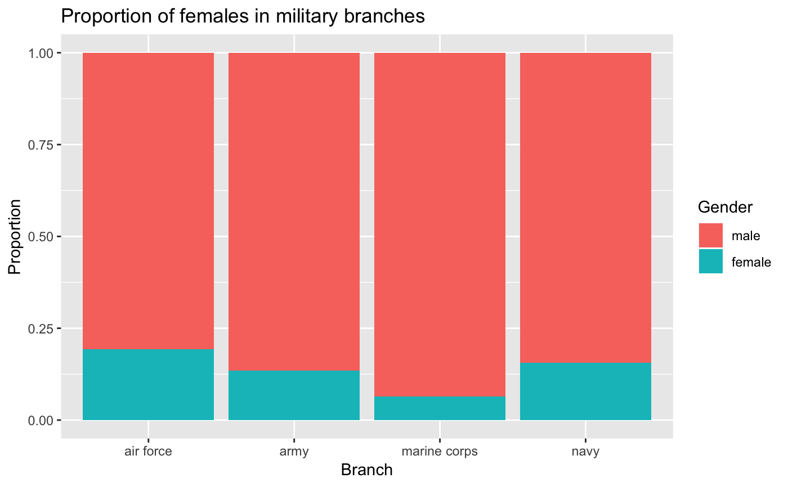
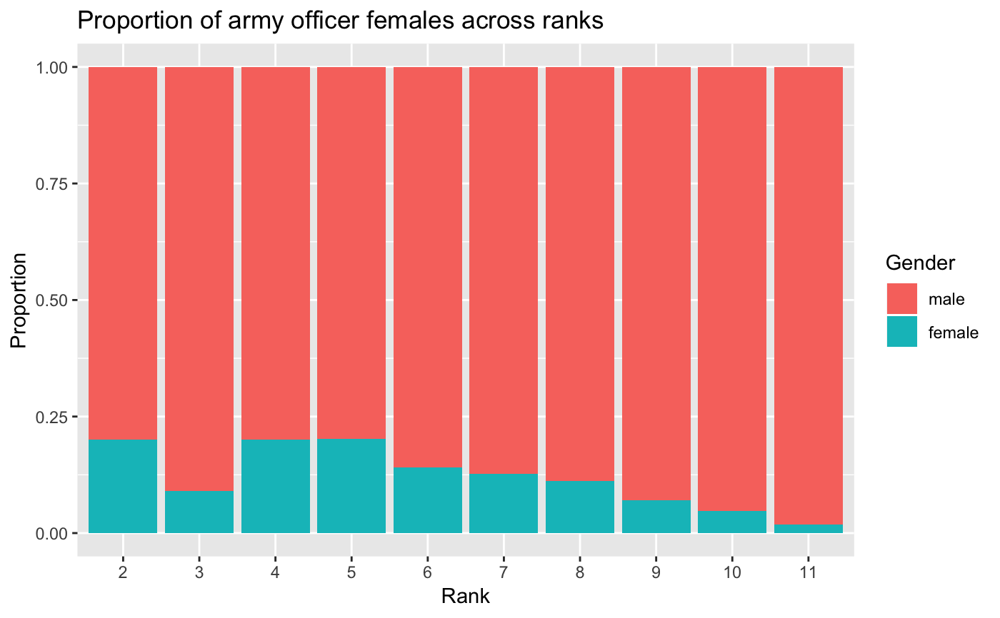

military.RdThis dataset contains demographic information on every member of the US armed forces including gender, race, and rank.
A tibble with 1414593 observations on the following 6 variables.
The status of the service member as enlisted officer
or warrant officer.
The branch of the armed forces: air force, army,
marine corps, navy.
Whether the service member is female or male.
The race identified by the service member:
ami/aln (american indian/alaskan native), asian, black,
multi (multi-ethinic), p/i (pacific islander), unk
(unknown), or white.
Whether a service member identifies with being hispanic (TRUE)
or not (FALSE).
The numeric rank of the service member (higher number indicates higher rank).
Data provided by the Department of Defense and made available at https://explore.data.gov/Population/Personnel-Trends-by-Gender-Race/zqae-ad8kdata.gov. Retrieval date: Feb 20, 2012.
The branches covered by this data set include the Army, Navy, Air Force, and Marine Corps. Demographic information on the Coast Guard is contained in the original data set but has not been included here.
OpenIntro, http://www.openintro.org.
data(military) library(dplyr) library(ggplot2) library(forcats) # Proportion of females in military branches military %>% ggplot(aes(x = factor(branch), fill = fct_rev(gender))) + geom_bar(position = "fill") + labs( x = "Branch", y = "Proportion", fill = "Gender", title = "Proportion of females in military branches" )# Proportion of army officer females across ranks military %>% filter( grade == "officer", branch == "army" ) %>% ggplot(aes(x = factor(rank), fill = fct_rev(gender))) + geom_bar(position = "fill") + labs( x = "Rank", y = "Proportion", fill = "Gender", title = "Proportion of army officer females across ranks" )